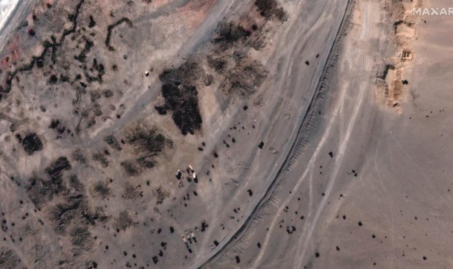

Vote cannot be secret forever, Justice Ahsan tells ECP during hearing on Senate polls reference
A day after the Election Commission of Pakistan (ECP) received flak from the apex court during the hearing of a presidential reference on the use of open ballots in the upcoming Senate elections, Justice Ijazul Ahsan on Wednesday told the body that the vote in Senate polls "cannot remain secret forever".
During the hearing on Tuesday, the five-judge Supreme Court bench, headed by Chief Justice Gulzar Ahmed, had asked Chief Election Commissioner (CEC) Sikander Sultan Raja to consider recommendations presented by Attorney General of Pakistan Khalid Jawed Khan and submit a response to the court.
In its response submitted to the court today, the ECP maintained that according to Article 226 of the Constitution, Senate elections could be held through secret voting only.
The ECP's counsel said that votes for the Senate elections would "always remain secret" and the votes that were cast could "not be shown to anyone".
Satellite images show China emptying military camps at Ladakh border flashpoint with India

China has dismantled dozens of structures and moved vehicles to empty out entire camps along a disputed Himalayan border, where Indian and Chinese troops have been locked in a face-off since last summer, satellite images released on Wednesday show.
The nuclear-armed neighbours last week announced a plan to pull back troops, tanks and other equipment from the banks of Pangong Tso, a glacial lake in the Ladakh region, that became a flashpoint in the prolonged border dispute.
Satellite imagery of some areas on the northern bank of Pangong Tso from Tuesday supplied by Maxar Technologies shows that multiple Chinese military camps, which could be seen there in late January, have been removed.
“Similar action is happening from our side also,” an Indian official in New Delhi, who requested anonymity as they were not authorised to speak to media, told Reuters.
'We will perish or survive together': PM Imran calls for global strategy to recover from Covid pandemic
Prime Minister Imran Khan on Wednesday highlighted the need to devise a joint strategy to confront the global economic shocks triggered by the Covid-19 pandemic, saying "we will perish or survive together."
While delivering a keynote address at the governing council of the International Fund for Agricultural Development (IFAD) virtually, the premier also spoke about the dangers of global hunger and malnutrition affecting hundreds of millions of people, cautioning that the world today faced a "looming agricultural crisis".
He said agriculture was central to human survival and 600m people suffered from hunger even as the global population was about to hit eight billion.
The Covid-19 pandemic is likely to push another 100m people into extreme poverty, the prime minister noted, saying more than 20 countries were food insecure, while the World Food Programme had warned of the danger of famine in some of the poorest countries and conflict zones.
'Court decisions worsened relations with tech companies': Fawad urges judges not to hear cases about IT sector
Federal Minister for Science and Technology Fawad Chaudhry said on Wednesday that the tech industry in Pakistan had been hurt by state policies and court decisions, including worsened relations with Information Technology (IT) companies, as he urged judges to desist from hearing cases pertaining to technological matters.
The federal minister was addressing a a two-day International Media Conference at the Fatima Jinnah Women University in Rawalpindi. He said past decisions of the state and the courts, particularly those in 2014, had dealt a blow to Pakistan's relations with digital and tech companies and hindered the progress of the industry in Pakistan.
The federal minister said that he had urged judges in his meetings with them to not hear cases pertaining to the technology or digital sector. He said the country needed to prepare itself for the future and foreign investment could only be attracted through altering state policies. He suggested that technology companies should be invited for the training and skills development of Pakistan's students.